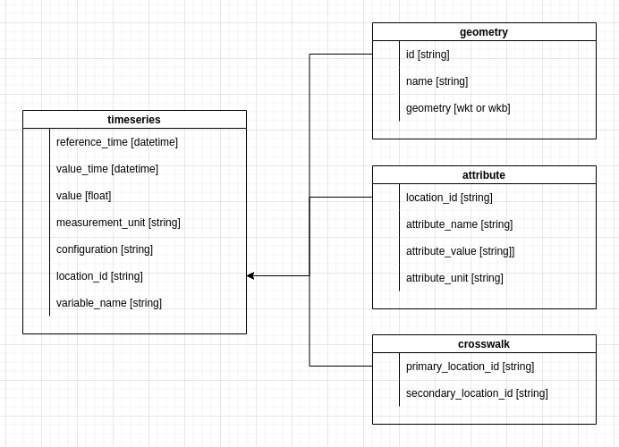

Evaluation Data Models#
This document describes the initial data models used in the yet-to-be-named evaluation system. These are considered the minimum fields required for the system to work. Additional fields can be added but may not show up by default in the prepared queries. The timeseries, crosswalk, location and threshold data models are schemas but not table names. In practice the data will be stored in one or more files (parquet or csv) and can have any name. In some cases it could also be implemented as an actual database table.
This is intended to be a living document that provides a common data model to work from that will be updated as we progress, learn what works, learn what doesn’t, etc.
Timeseries#
The timeseries data model (mostly taken from [HydroTools](NOAA-OWP/hydrotools)) describes the schema used to store, you guessed it, timeseries data from both observed and simulated sources. In the context of this system, this data model will be utilized as the format to store data as parquet files. As such, a standard file directory structure is also important. See [Cache Directory Structure] below.
reference_time: [datetime] This is a reference time for a particular model simulation.
value_time: [datetime] This is the time a value is valid at.
value: [float] This is the value being reported.
variable_name: [string] This describes the type of value, for example streamflow. This are not verified by the system but should be consistent.
measurement_unit: [string] This describes the units of the - value, for example m^3/s. This are not verified by the system but should be consistent.
configuration: [string] This is a reference string describing the model simulation. In the context of the v2.2 NWM, this would refer to the a model run such as medium_range or analysis_assim. In the NextGen system or a test-bed simulation, this would be a relevant identifier.
location_id: [string] This is the location_id associated assigned to the timeseries by the creating entity. For example, if this timeseries was USGS gage data, then the - location_id would be the USGS site code, if it was output from V2.2 of the National Water Model, then the NWM feature ID would be used. For clarity, a “source string” can be prepend to the ID to make the source of the ID obvious. For example usgs-0123456789 or huc10-1834526098. “source string” should be lowercase and separated from the ID with a hyphen (“-“).
Crosswalk#
The crosswalk data model is used to define relationships between timeseries IDs that have different IDs but refer to the same or comparable locations.
primary_location_id: [string] This is the primary ID used to join timeseries from different sources for the purpose of comparison. This ID will typically be the ID used for the “observed” or baseline timeseries that a forecast or simulation timeseries are being compared against, but could itself be a simulation. For example, if comparing one simulation to another. As the primary ID, this is the ID used to join geographic and location specific data (i.e. thresholds) to the timeseries data.
secondary_location_id: [string] This is the secondary location ID used for the “simulated” timeseries.
Location#
The location data model is used to store geographic entities. This could include almost anything but in the context of hydrologic data we will mostly be referring to forecast points or gage locations (points) and catchments (polygons), and possibly stream reaches (polylines).
id: [string] This is the ID of the location data and should match the timeseries.location_id and the crosswalk.primary_location_id as well as the threshold.location_id (e.g., usgs-0123456789). This is the ID associated with the “observed” timeseries.
name: [string] This is the common name for location (e.g., Some River at Some City, Some State). This will be used for plots
geometry: [string/bytes] Geometry in WKT/WKB format. For example “Point(100,200)”. Must be “EPSG:4326”
Attributes#
The attributes data model is used to store other data about the location. This could possibly replaced by a generic key:value table.
location_id: [string] Primary location ID of the location.
attribute_name: [string] Name of attribute (i.e., 2-year flow, eco-region)
attribute_value: [string | float] Attribute value
attribute_unit: [string] Units of attribute value, if any.
Data Model Diagram#
The following is a visual representation of the data model structure.
{kind=link}